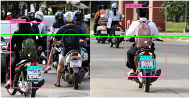

Road traffic accidents involving two-wheeled vehicles account for a significant portion of fatalities globally. Helmets have proven crucial in mitigating injury severity, underscoring an urgent need to promote and enforce helmet usage regulations.
This research presents a novel system for real-time helmet detection and traffic rule enforcement leveraging computer vision and deep learning techniques.
Detected vehicles, riders, and license plates are securely stored. Violation documentation (challans) is automatically generated with relevant details and fines. The system also includes an automated email notification feature for enforcement.
Extensive evaluation demonstrates the system's accuracy, efficiency, and real-world applicability in automating helmet violation detection and documentation.
